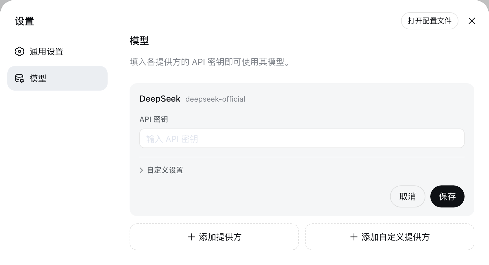

完整工作区
管理多个工作区和会话，在对话、轨迹与任务详情之间快速切换。
社区桌面发行版 · Tauri 2
把工作区、会话、模型、工具、权限与插件带进原生桌面窗口。打开应用即可继续工作，无需再管理浏览器标签页。
Windows 10/11 · NSIS 与 MSI 安装包 · 需先安装 dsh CLI · v0.1.0-desktop.1
桌面工作台
桌面壳不改变 Harness 的插件模型，只把日常入口、窗口生命周期与平台安装体验整合到一起。
管理多个工作区和会话，在对话、轨迹与任务详情之间快速切换。
在设置页连接提供方、选择模型，并为新会话配置权限模式与 Agent 预设。
继续使用 Cordis 插件体系、工具与配置文件，桌面版不会锁住现有工作流。
安装包与更新包均带签名校验，从 GitHub Releases 自动升级到新版本。
界面预览
输入 OPENCODE_API_KEY 验证套餐并导入官方模型，在提供方行内直接查看用量窗口，随请求完成自动刷新。

Desktop preview